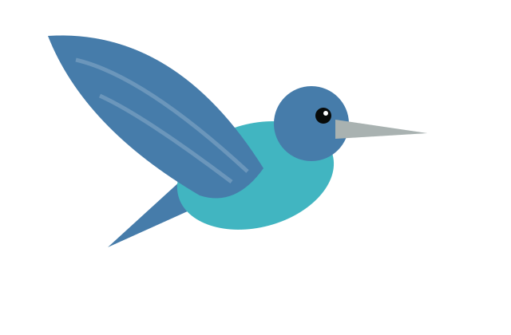
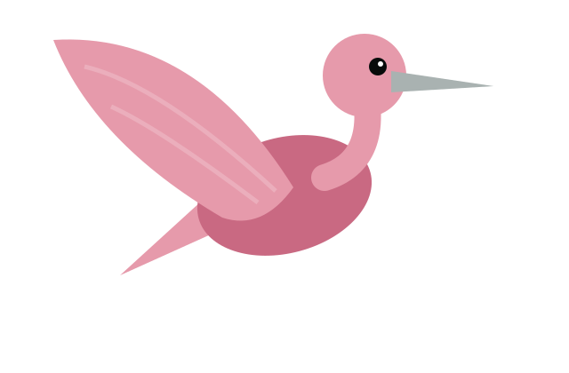

Indian roller · photo sourceIndian roller
Coracias benghalensis
- Habitat
- Open farmland and woodland edges
- Behaviour
- Perches on wires and dives for insects; vivid blue wings in flight.
- When to look
- Year-round; early mornings
 KASHIF YAMEEN
KASHIF YAMEENIllustrated introductions to birds you may encounter in the region. Sightings vary.
Come birding with me ↗
Indian roller · photo sourceCoracias benghalensis
Alcedo atthis
Terpsiphone paradisi

Greater flamingo · photo sourcePhoenicopterus roseus
Athene brama
Antigone antigone